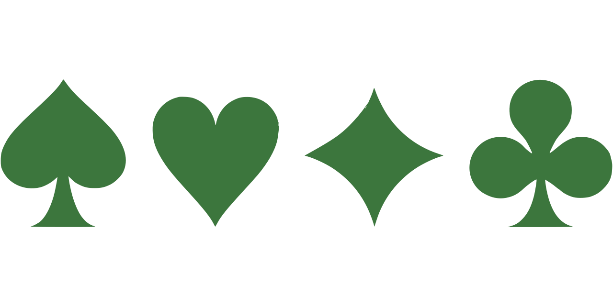

Licenca
To delo je na voljo pod pogoji slovenske licence Creative Commons 2.5:
priznanje avtorstva - nekomercialno - deljenje pod enakimi pogoji.
Celotna licenca je na voljo na spletu na naslovu http://creativecommons.org/licenses/by-nc-sa/2.5/si/. V skladu s to licenco je dovoljeno vsakemu uporabniku delo razmnoževati, distribuirati, javno priobčevati, dajati v najem in tudi predelovati, vendar samo v nekomercialne namene in ob pogoju, da navede avtorja oziroma avtorje in izdajatelja tega dela. Če uporabnik delo predela, kar pomeni, da ga spremeni, preoblikuje, prevede ali uporabi to delo v svojem delu, lahko predelavo dela ponudi na voljo le pod pogoji, ki so enaki pogojem iz te licence oziroma pod enako licenco.

Izzivi
Črni Peter 
Dopolni GUI program za igranje igre s karatmi Črni Peter (za dva igralca). Pravila igre lahko prebereš s klikom ustreznega gumba.
Slike kart, ki jih lahko uporabiš pri programiranju z modulom simplegui, najdeš na naslovu https://i.imgur.com/02fPJzJ.gif. Slike kart, ki jih uporabiš pri programiranju z modulom tkinter dobiš, če klikneš spodnji gumb.
Remi
Dopolni GUI program za igranje igre s karatmi Remi (za dva igralca). Pravila igre lahko prebereš s klikom ustreznega gumba.
Slike kart, ki jih lahko uporabiš pri programiranju z modulom simplegui, najdeš na naslovu https://i.imgur.com/02fPJzJ.gif. Slike kart, ki jih uporabiš pri programiranju z modulom tkinter dobiš, če klikneš spodnji gumb.
Enka / Uno
Dopolni GUI program za igranje igre s karatmi Enka oziroma Uno (za dva igralca). Pravila igre lahko prebereš s klikom ustreznega gumba.
Slike kart, ki jih lahko uporabiš pri programiranju z modulom simplegui, najdeš na naslovu https://i.imgur.com/b49PjlZ.gif. Slike kart, ki jih uporabiš pri programiranju z modulom tkinter dobiš, če klikneš spodnji gumb.
Briškola
Dopolni GUI program za igranje igre s karatmi Briškola (za dva igralca). Pravila igre lahko prebereš s klikom ustreznega gumba.
Slike kart, ki jih lahko uporabiš pri programiranju z modulom simplegui, najdeš na naslovu https://i.imgur.com/RSbkSo3.gif. Slike kart, ki jih uporabiš pri programiranju z modulom tkinter dobiš, če klikneš spodnji gumb.
Šnops / 66
Dopolni GUI program za igranje igre s karatmi Šnops (za dva igralca). Pravila igre lahko prebereš s klikom ustreznega gumba.
Slike kart, ki jih lahko uporabiš pri programiranju z modulom simplegui, najdeš na naslovu https://i.imgur.com/FEbYZo7.gif. Slike kart, ki jih uporabiš pri programiranju z modulom tkinter dobiš, če klikneš spodnji gumb.
Tarok
Dopolni GUI program za igranje igre s karatmi Tarok (za dva igralca). Pravila igre lahko prebereš s klikom ustreznega gumba.
Slike kart, ki jih lahko uporabiš pri programiranju z modulom simplegui, najdeš na naslovu https://i.imgur.com/4JGVQgs.gif. Slike kart, ki jih uporabiš pri programiranju z modulom tkinter dobiš, če klikneš spodnji gumb.